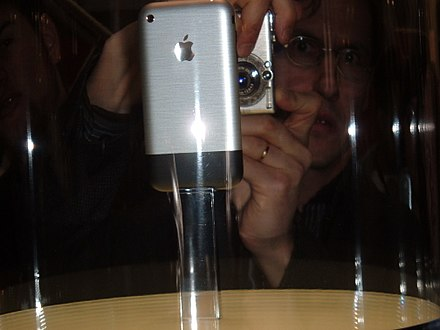

- Summarize
- History
- Stock
- Apple Korea
History
Apple Computer Company was founded on April 1, 1976, by Steve Jobs, Steve Wozniak, and Ronald Wayne as a business partnership. During his keynote speech at the Macworld Expo on January 9, 2007, Jobs announced that Apple Computer, Inc. would thereafter be known as "Apple Inc.", because the company had shifted its emphasis from computers to consumer electronics. This event also saw the announcement of the iPhone and the Apple TV. The company sold 270,000 iPhone units during the first 30 hours of sales, and the device was called "a game changer for the industry".
During its annual WWDC keynote speech on June 22, 2020, Apple announced it will transition the Mac away from Intel processors to processors developed in-house. The announcement was expected by industry analysts, and it has been noted that Macs featuring Apple's processors would allow for big increases in performance over current Intel-based models. On November 10, 2020, the MacBook Air, MacBook Pro, and the Mac Mini became the first Mac devices powered by an Apple-designed processor, the Apple M1.
